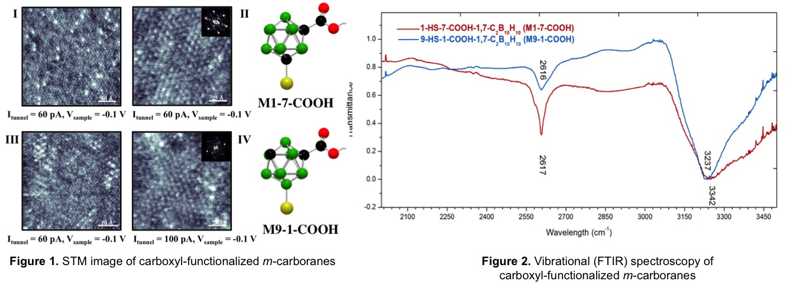
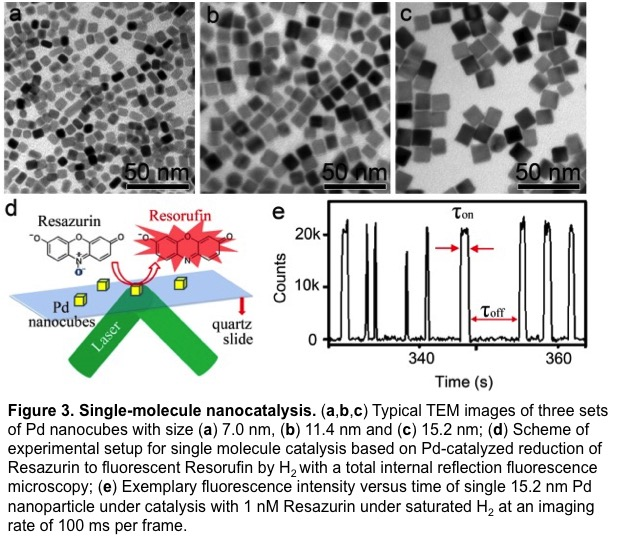
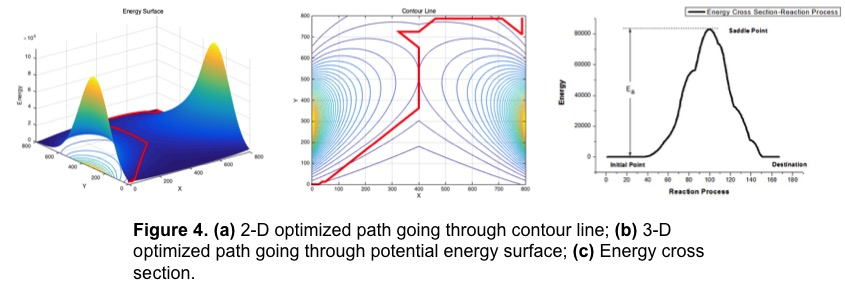
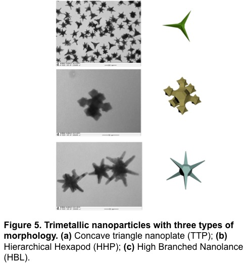

Poster and Publications
Qi, Y.; Goronzy, D.; Weiss, P. “Characterization of Self-Assembled Carboxyl-Functionalized m-Carboranethiol Molecules”.
Chen, T.; Chen, S.; Zhang, Y.; Qi, Y.; Zhao, Y.; Xu, W.; Zeng, J. “Catalytic Kinetics of Different Types of Surface Atoms on Shaped Pd Nanocrystals”, Angew. Chem. Int. Ed., accepted, DOI: 10.1002/anie.201509165R1.
Chen, T.; Chen, S.; Zhang, Y.; Qi, Y.; Zhao, Y.; Zeng, J.; Xu, W. “Size-Dependent Catalytic Kinetics and Dynamics of Pd Nanocubes: A Single-Molecule Study”, Submitted to J. Am. Chem. Soc., under review.
Presentations
06/2016 First-principle Study and Electron Time Evolution Simulation of Hybrid Graphitic Carbon Nitride Nanocomposite, Undergrad Thesis Research, USTC, Hefei, Anhui, PR China.
09/2015 Characterization of Self-Assembled Carboxyl-Functionalized m-Carboranethiol Molecules, Cross-disciplinary Scholars in Science and Technology, UCLA, Los Angeles, CA.
08/2015 Host of the Cross-disciplinary Scholar Lecture by Prof. Paul Weiss, Cross-disciplinary Scholars in Science and Technology, UCLA, Los Angeles, CA.
11/2014 Cu2+ and CH3NH2 Assisted Synthesis of Pd-Pt Nanocrystals and Properties of Catalysis, 10th Undergraduate Physical Experiments Treatise Tournament, USTC, Hefei, Anhui, PR China.
05/2014 Optical Properties of Water Freezing Process, 5th China Undergraduate Physicists’ Tournament, USTC, Hefei, Anhui, PR China.
06/2013 Application of Magnetic Shielding, Electromagnetic Treatise Tournament of USTC, USTC, Hefei, Anhui, PR China.
Overview
My research interest covers a broad area of experimental and computational physical chemistry, including the theoretical modeling, algorithm development and application of basic chemistry in materials science.
Of the following four pieces of work, one was completed at the University of California, Los Angeles (UCLA), and the other three were completed at the University of Science and Technology of China (USTC).
-
Mar. - June 2016
First-principle Study and Electron Time Evolution Simulation of Hybrid Graphitic Carbon Nitride Nanocomposite
Advisor: Prof. Jun Jiang, Professor at Department of Chemical Physics and Hefei National Laboratory for Physical Science at Microscale, USTC
In this article, starting from the first-principles methods and using density functional theory (DFT), we investigated the electronic properties like band structure, density of states of hybrid nanocomposite formed by g-C3N4 and C2N-h2D. We also investigated the electronic distribution and transfer properties of the hybrid structure using electron time evolution (ETE) model we developed. The results showed that the valance band maximum is mainly contributed by g-C3N4 with the states of C2N-h2D located at a lower energy position, while the conduction band minimum mostly comes from C2N-h2D with the states of g-C3N4 located at a higher energy position. Analysis of the charge density difference in the nanocomposite reveals a charge-redistribution phenomenon, specifically charge-hole separation, and charge transfer from C2N-h2D layer to g-C3N4 layer, which is corresponding to the results of the ETE model.
Read more >>>
-
July - Sep. 2015
Characterization of Self-Assembled Carboxyl Functionalized m-Carboranethiol Molecules
Advisor: Prof. Paul S. Weiss (Editor-in-Chief of ACS Nano), Distinguished Professor at Department of Chemistry and Biochemistry, California Nanosystems Institute, UCLA
This project aimed to characterize the self-assembled monolayers (SAMs) of the carboxyl functionalized carboranethiol molecules by using Scanning Tunneling Microscope (STM). The higher/lower intensity protrusion signals on the micrographs provided substantial explanations about the bonding modes of the molecules on the substrate surface. By introducing the carboxyl functionalized group to the carboranethiol molecules, some properties, like the nearest neighbor spacing of the hexagonal closing packing lattice of the M1-7-COOH and M9-1-COOH SAMs, showed different from those of their non-functionalized molecules. This gave us deeper insight into the bonding mode of the SAMs on the substrate surface.
Read more >>>  -
Dec. 2014 - May. 2015
Catalytic Kinetics of Different Types of Surface Atoms on Shaped Pd Nanocrystals
Advisor: Prof. Jie Zeng, Professor at Department of Chemical Physics and Hefei National Laboratory for Physical Science at Microscale, USTC
Advisor: Prof. Weilin Xu, Professor at Changchun Institute of Applied Chemistry, Chinese Academy of Sciences
Study of Heterogeneous nanocatalysis is often hampered by the difficulty of identifying the properties or roles of different types of surface atoms, such as the plane, edge or corner atoms on a single nanoparticle surface. In order to understand the catalytic properties or roles of different types of surface atoms on metal nanocatalysts, we built models to investigate the catalytic kinetics and dynamics of the different types of surface atoms (plane and edge) from single-molecule nanocatalysis of Pd nanocrystals. The results showed that the edge and plane of Pd nanocubes had similar size-dependent product formation processes, but inverse product dissociation processes.
Read more >>>  -
Apr. - Jun. 2015
Application of Modified A-Star Algorithm in Searching for Optimized Reaction Pathways
Advisor: Prof. Qun Zhang, Professor at Department of Chemical Physics, USTC
This was a independent project aimed to modify and apply the A-Star Algorithm, which serves as the algorithmic prototype of unmanned aerial vehicle system, in the area of dynamics and kinetics of chemical reaction to search for the optimized reaction pathways and calculate activation energy. The idea was raised by myself. I coded part of the C program to realize the modified algorithm, built the mode to do the data analysis and did the simulation on Matlab to give the reaction pathways on a specific energy surface by using the data we obtained from the program.
Read more >>>  -
Nov. 2014 - Present
Cu2+ and CH3NH2 Assisted Synthesis of Pd-Pt Nanocrystals and Properties of Catalysis
Advisor: Prof. Jie Zeng, Professor at Department of Chemical Physics and Hefei National Laboratory for Physical Science at Microscale, USTC
In order to catalyze some industrial selective hydrogenation reactions, high-index facets are needed. CH3NH2 was used as a reducing agent and Cu2+ as assisting ion to synthesize trimetallic nanoparticles with three types of morphology, all of which possessed high-index facets. we also characterized the crystal structure of the nanoparticles by XRD, their elemental composition by ICP and the catalytic performance to the selective hydrogenation. The preliminary results of catalysis tests exhibited good catalytic properties towards the selective hydrogenation of m-nitrostyrene.
Read more >>> 